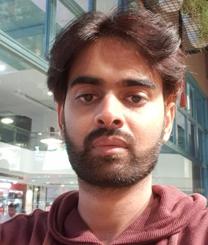

GOUTHAM KONDETI

Contact
 goutham.kondeti@gmail.com
goutham.kondeti@gmail.com
 goutham-kondeti
goutham-kondeti
9490654324
 Vijaywada, India, 521151
Vijaywada, India, 521151
A PharmD graduate with 6years of experience having skills and
attributes to offer the Healthcare domain with leadership,
analytical thinking, problem solving, team working and
communication. To secure a challenging position that utilizes my
experience, while allowing me the opportunity to grow
professionally.
Education
- ADITYA PHARMACY COLLEGE
Doctor of Pharmacy
2017
-
SRI CHAITANYA COLLEGE
Intermediate
2011
-
VISWABHARATI HIGH SCHOOL
SSC
2009
Experience
PHARMCOVIGILANCE SERVICES ANALYST
Accenture Solutions, Chennai
May 2019 - Jul 2023
- Handling IT incidents in collaboration with Database support team.
- Raising and managing incidents related to email source documents
- Conducting meetings with Client and Database support team for streamlining incidents and product enhancements.
- UAT for fixes and enhancements in Sandbox and Validation Environment.
- Creating VBA script to split Line Listings.
- Clinical and Spontaneous Pharmacovigilance Case processing in Argus and LSMV.
- Coordinating with Vendors and Business partners on AE forms discrepancies and technical issues.
DRUG SAFETY ASSOCIATE
Bioclinica Safety, Mysore
Jan 2019 - May 2019
- Processing of spontaneous, clinical and literature cases.
- Communicating with Business Partners and Vendors on Adverse Event reporting discrepancies.
- Performing AE follow-up through letters and phone via MICC.
- Performing Adverse Event Reconciliation.
AUDITOR
Primera Medical Technologies, Hyderabad
Mar 2017 - Aug-2018
- Processing of PHSI from EMRs EPIC and Cerner into Truven Health Database.
- Quality audit on cases processed by abstractors in Truven.
- Generating reports from Truven and CAPA management.
- Performing UAT for tools to capture information from EPIC EMR.
- Preparation of SOPs and training the abstractors.
- Following up with Hospital Nurses in USA for standard treatments.
Skills
- Pharmacovigilance
- Argus Safety
- SQL
- PLSQL
- Advanced Excel
- VBA
- HTML
- Clinical Research
- UAT
- ICH-GCP
- ICSR case processing
- Team Leadership
- Client Handling
- MS Office
- LSMV
- MedDRA
- Responsible & Reliable
- Good Communication
- Problem-solving
Certifications
- Base SAS
- SQL
- PL/SQL
- OCI Foundations 2023 Associate
Interests
- I am an avid book reader
- Fitness
- Digital technology
- Playing Guitar
- Follower and active participant of Quora